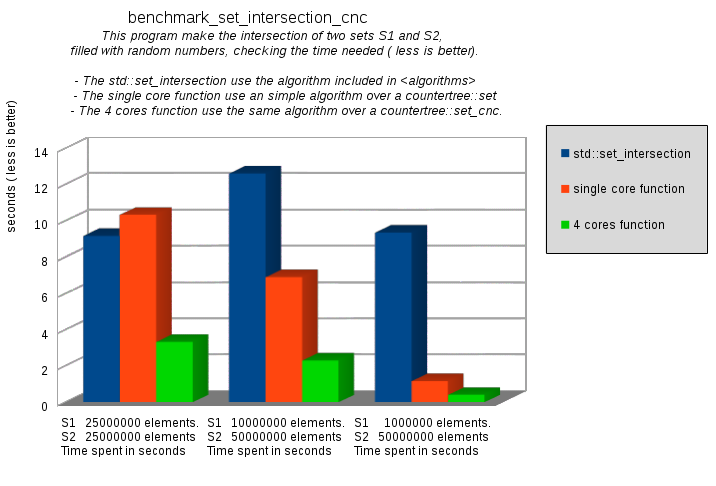
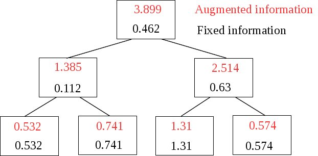
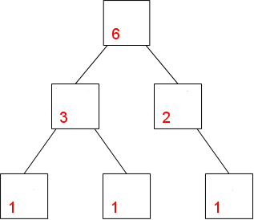

The [ Counter Tree + Suballocator ] Library
Francisco
Jose Tapia Copyright © 2010-2013 Francisco Jose Tapia
1.5.-
Future improvements
The Counter Tree Library is a long term project with 6 steps. The first
3 are done
- Design and implementation of the countertree
- Design and implementation of suballocator
- Concurrent version of countertree and suballocator
- Design and implementation of parallel functions for very large
trees. ( parallel copy and clear, parallel fast logic functions
(union, intersection, nor intersection) with trees, parallel copy
to and from a vector, and several parallel functions of
<algorithms> )
- Redesign the internal algorithm.
- Augmented trees
1.5.1.-
Strategies for many core systems. Parallel algorithms for very large
trees
PROBLEM
DESCRIPTION
Until now, the main problem in the design of parallel algorithms over
tree data structures had been the difficult to assign the elements
stored in the tree between an arbitrary number of threads. With this
library, this problem is removed. Now, it's time to face the next
problems in the design of parallel algorithms.
The main problem is the lock contention when the number of threads
grows, in the operations which need an exclusive lock over the data
structure ( insertion, deletion, modification ...). The lock contention
appear when the number of threads doing operations with exclusive lock
grows.
In order to talk about parallel algorithms we have two kinds of
algorithms:
a)
Algorithms
with lock contention , when the number of threads grows. We
can find two kinds of algorithms with lock contentions:
- Algorithms with high contentions Algorithms which use the
external interface of the classes, and implicit the locks used by
these functions. Are very easy to use, but the number of
concurrent threads is limited by the delays introduced by the lock
system.
- Algorithm with low contentions. Algorithms which use the
internal structure of the tree, and use the lock system only by a
few short operations. Due this, the number of concurrent threads
can be several times the number of the previous kind. More
difficult to program
b)
Algorithms without lock contention
when the number of threads grows. These algorithms use the internal
structure of the tree, and or don't use the lock system. Due this the
number of concurrent threads can be very high, and is limited only by
the HW (When many cores of a processor try to access to the memory,
the cache rate down ans all the process are slow down ), or by the
compiler (the std::allocator of GCC 4.8 when four threads access
simultaneously, instead of be four times faster is 60% slower)
Due to the limitations of the memory allocator of the compilers when
the number of threads grows, I had designed a
new
memory suballocator , with
speed
linear with the number of threads, expecting to reach more than
100 threads at full speed.
All the algorithms mentioned here, are designed on paper, and many of
them are implemented. The idea is to include many of them in the next
version. But others require the modification of the internal algorithm
of the tree, in order to implement operations of split and join over
trees.
These new algorithms affect to the semantic of the functions, by
example how to pass to the tree destructor the number of threads to
use? The solution to these problems need a study in deep for to evaluate
the options and select the best solution.
SOLUTIONS
With the trees we can find the next operations :
1.- CONSULT
Any number of threads can access simultaneously to the tree without
lock contention problems.
2.- ACCESS
TO THE ELEMENTS.
Any number of threads can access simultaneously to the tree without
lock contention problems, but without the access by position it is very
difficult to distribute between an arbitrary number of threads, imagine
a tree with 200000000 nodes and a Xeon Phis with 244 threads.)
3.-
INSERTION ,DELETION AND MODIFICATION.
These operations present problems of lock contentions with an intensive
use, when the number of threads grows. But there is a strategy in order
to minimize the problem.
If the number of operations is small, the problem is small too. But if
you have a great number of operations, you have an algorithm for to
resolve it. This algorithm need to sort the operations , in order to
distribute between the threads.
There are two solutions:
- Each threads look for the position to insert, delete or modify
concurrently. This operation spend time because must and only use
the exclusive locks in the operation with the node, which is a sort
and fast operation, because involve only a few nodes around. This
can be implemented with the actual version and multiply several
times the number of write operations per second compared with the
algorithms of high lock contentions.
- Need operations of split the tree ( we have sub trees ordered) and
the join operations of ordered sub trees. (These operations don't be
in the actual version of the algorithm, and they are planned for
future versions, as comment in the point 1.5.3.- Redesign of the
internal algorithm). The idea is split the main tree in several sub
trees and each thread manages a sub tree. When all the threads
finish the operations, we join all the trees obtaining a new main
tree.
You need to sort all the operations to do, and assign to each thread a
range of operations. After this, split the tree between the number of
threads and do all the operation over each sub tree. When finish, join
the sub trees and it's done.
Insertions
in the tree
In the picture you can see, we have 8 operations to insert and we have 4
threads. The vector are the elements to insert and have 4 threads.
Insertions
in split trees
Each sub tree have the same number of operations to do, and when finish,
join the sub trees obtaining a new main tree.
This algorithm can be implemented with any number of threads without
lock contentions. The operations of split and join the sub trees are
similar in cost to the insertion or the deletion of a node in the tree.
4.- COPY AND DELETE THE TREE.
Actually the compilers are using an algorithm O(N) with the copy and
clear the tree. Even with this algorithm, these operations spend a great
time if the tree is big.
I have designed and implemented for to be included in the next version
the next parallel algorithms :
- Parallel Copy a Tree (O
(N) ) Algorithm without lock contentions. The limitations are caused
by the memory allocator of the compiler.
- Parallel Delete a Tree
- Parallel Copy of a Vector in a
Tree (O (N) ) Algorithm without lock contentions. With very
large vectors, the limitations are caused by the slow down of the
cache rate of the processor.
- Parallel copy of a Tree in a
Vector (O (N) ) Algorithm without lock contentions. With
very large vectors, the limitations are caused by the slow down of
the cache rate of the processor.
5.- UNION, INTERSECTION AND NON INTERSECTION OPERATIONS
Many times the maps and sets are used as index. When make a search in
the map, obtain a set of keys. In the selection process you must combine
several sets of keys with logical functions (union, intersection,
non-intersection....). Many times these set are very large, the time and
the memory used too, like in the map-reduce systems. The
map
reduce system are the heart of the
Big
Data applications. With the random-access iterators is easy to
make these functions parallel. The idea is to create a rich set of
parallel fast logical functions in order to simplify the process, reduce
the memory used in the process and cut the time needed with the
concurrent process.

This graph is the benchmark of an parallel algorithm with high
contentions. The algorithm shows promising results in this kind of
operations. ( you can find the code in the benchmark cnc folder
benchmark_set_intersection_cnc.cpp.)
The next algorithms planned are :
- Parallel Intersection of two
trees (O (N logN) ) Algorithm with low contentions. Very
fast compared with the included in <algorithms>
- Parallel non Intersection of
two trees (O (N logN) ) Algorithm with low contentions.
Very fast compared with the included in <algorithms>
- Parallel Union of two trees
(O (N logN) ) Algorithm with low contentions. Very fast compared
with the included in <algorithms>
- Parallel Intersection and not
intersection of two trees (O (N logN) ) Algorithm with low
contentions. Very fast compared with the included in
<algorithms>
With the access by position it's easy design parallel algorithms for to
do these operations , but have lock contention in the insertion of the
result in the final data structure. With the operations of split and
join the tree we can design these algorithms without lock contentions.
1.5.2.-
Redesign of the internal algorithm
When you design a
tree, you must develop a
balanced algorithm in order to prevent a degenerate
tree
(
Tree like a linked list). You have several
types of balanced trees ( mainly Red-Black and
AVL ).
That decision about the type of balance tree have influence on the
quality of the balance and the speed of the
tree.
The most used are the red-black trees. You have an excellent description
with code in
“Introduction to
Algorithms” ( Cormen , Leiserson, Rivest).

But , even the same type of balance tree,
,it can be done in several ways,
In order to design an algorithm for to
insert, delete and balance a red-black tree you must take care about
1.- What of the
solutions do you want
2.- How do you define
the rules, which applying obtain the desired solution.
3.- What's the cost in
time of process .
4.- Benefits,
advantage of this solution respect the others
When I decided add the counter
to the nodes for the design of the CounterTree,
I tried to use the code showed in "Introduction to algorithms", but
was very complex the management of the counters, and decide design my
own balanced algorithm based on the 234Tree description. The result is
the actual version of CounterTree.
It is 10% more or less slower than the GCC
implementation, but is logic , because must manage the pointers and
the counters.
It's only a first version. I am convinced, this algorithm can be
improved in the design and in the implementation, Looking for a way for
to improve the speed , I examined others implementations of Red-Black
trees, several books an mainly with the experience obtained with the
Suballocator.
I decided to change several things of the algorithm and the
implementation, pursuing to improve the speed. I have a first design
done on paper.
Some parallel functions of the tree, described in the previous point,
with a big number of threads can appear bottleneck effects. The redesign
of several algorithms using techniques of split and join the tree,
permit to be used by hundreds of threads without bottleneck effects.
This technique permit to make parallel functions didn't done previously.
The redesign of the algorithm must provide the split and join trees
functions, which permit to redesign several functions of the trees in
order to be efficient in a manycore system.
The new algorithm must provide a low level catalog of operations with
the nodes. ( insert, delete , rotations, swap... ) in order to provide
support to the next point, the
AUGMENTED
TREES
1.5.3.-
Augmented trees
The augmented trees are trees with additional information, which is not
fixed. It must be processed and changed when you insert, delete or move
an node in the tree.
The augmented trees have in each node a data not fixed( augmented
data). This data depend of the node and others node of the tree ( their
data, position, number of them ...). Due this, each change, insertion,
deletion or movement, generates changes in the augmented information in
all the nodes related.

This is an interval tree. The tree is ordered by the lower value of the
fixed information. The augmented information represent the interval of
the node and all the nodes under it including itself.

This tree is unordered ( The unordered trees are vector_tree). The
augmented information represent the addition of the augmented
information of the nodes under it , plus its fixed information.

The countertrees are augmented trees. The fixed information don't exist,
and the augmented information represent the number of nudes under it.
Every time you insert, delete or move a node in the tree, this
information must be recalculate.
You can find augmented trees with a wide variety of informations in
areas from the statistical or games, to the biology. Even you can find
trees with several augmented informations simoultaneously
For the speed the best solution is to include the information and the
process inside the
tree. With this, you
customize your
tree and obtain the maximum
speed.
In the new version of the algorithm, all the internal process of the
tree can be decomposed in a set of small operations
of a “catalog” like:
- Insert/delete a node in the right/left pointer of a node.
- All the rotations with nodes
- Swap of nodes directly linked and not directly linked
- Design the information to insert in the node
When you want have an augmented tree, you must codify, what must do with
your augmented information in each operation of the "catalog" . When the
tree execute its the code of each operation , execute also the code of
the same operation of your augmented information.
You can have augmented trees by several concepts simultaneously. Each
concept have codified the code of all the operations of the catalog. And
then when the tree execute the code of the operation, execute too the
code of all the augmented information of the tree.
You have compiled augmented trees, balanced, robust and with the maximal
speed, and with all the benefits of the countertrees, concurrent and,
thread-safe operations, access by position, use of suballocators....
 Boost
C++ Libraries
Boost
C++ Libraries